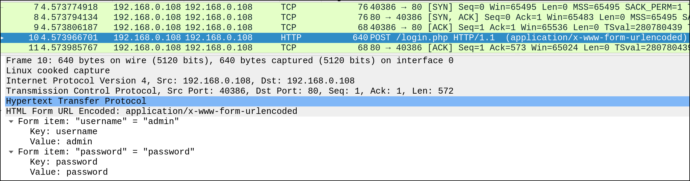
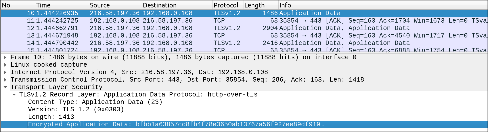
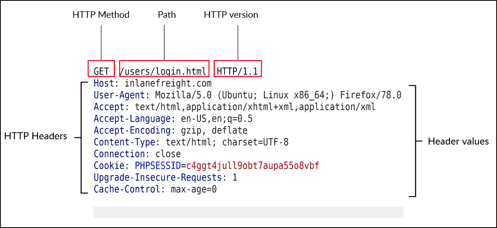
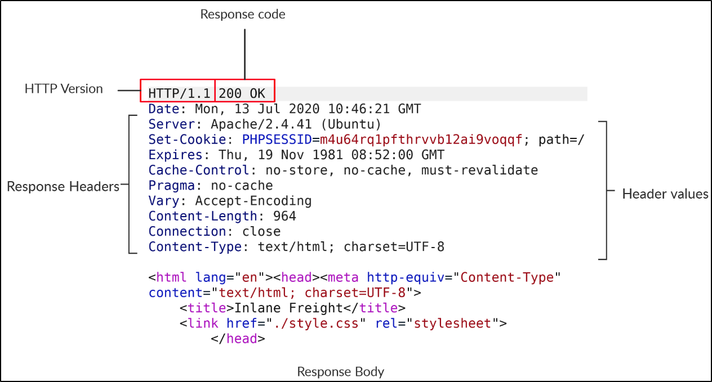
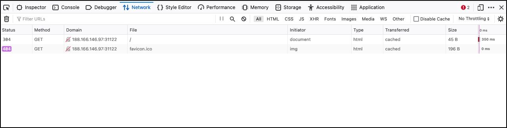

HTTP Fundamentals
HyperText Transfer Protocol (HTTP)
Today, the majority of the applications we use constantly interact with the internet, both web and mobile applications. Most internet communications are made with web requests through the [[HTTP Protocol]]. In short, HTTP is an [[Application Layer|application level]] protocol used to access the World Wide Web resources.
The term "hypertext" stands for text containing links to other resources and text that the readers can easily interpret.
HTTP communication consists of a [[Client]] and a [[Server]] where the client requests the server for a resource. The server processes the requests and returns the requested resource. The default [[Port]] for HTTP communication is port 80, though this can be changed to any other port, depending on the configuration.
The same requests are utilized when we use the Internet to visit different websites. As end-users, we enter what is known as a [[Fully Qualified Domain Name (FQDN)]] as a [[Uniform Resource Locator]] (URL) to reach the desired website.
URL
Resources over HTTP are accessed via a URL, which offers many more specifications than simply specifying a website to visit. The structure of a URL is as follows:
The breakdown of each component is as follows:
| Component | Example | Description |
|---|---|---|
| Scheme | http:// OR https:// | Identify protocol being accessed by the client |
| User Info | admin:password@ | Contains credentials used to authenticate to the host |
| Host | inlanefreight.com | Signifies the resource location, either [[Hostname]] or [[IP Address]] |
| [[Port]] | :80 | Separated by colon. If not specified, uses [[Default Ports]] |
| Path | /dashboard.php | Points to resource being accessed. If no path, returns default index |
| Query String | ?login=true | Start with "?", consists of parameter and a value |
| Fragments | #status | Processed by browser on client-side to locate sections within primary resource |
The HTTP Flow
The first time an end-user enters a [[Uniform Resource Locator|URL]] into the browser, it sends a request to a [[DNS]] server to resolve the domain and get its [[IP Address]]. The DNS server looks up the IP address for inlanefreight.com and returns it.
Warning
All domain names need to be resolved this way as a server cannot communicate without an IP address.
Info
Our browsers usually first look up records in the local "[[Hosts | /etc/hosts]]" file. If the requested domain does not exist inside, it contacts other DNS servers. The "/etc/hosts" file can be used to manually add records by adding the IP address and domain name.
When the browser gets the IP address linked to the domain, it sends a [[GET request]] to the default HTTP port, asking for the root (/) path. The web server receives the request and processes it. Servers are configured to return an [[Index HTML File|index file]] when a request for "/" is received.
The contents of the index.html page are read and returned by the web server as an HTTP response. The response also contains an [[HTTP Response Codes]]. For a normal returned response, the status code is 200 OK. The web browser then renders the index.html contents and presents it to the end user.
cURL
The tool "[[cURL]]" is a tool that primarily supports HTTP and other protocols. It can be used to send various types of web requests from the command line, which is necessary for many types of web penetration tests.
To send a basic HTTP request to any URL, the following syntax can be used:
cURL does not render the [[HTML]]/[[JavaScript]]/[[CSS]] code but instead prints it in raw format. The cURL command can also be used to download a page or file and save it locally via the following syntax:
Info
The uppercase "O" saves the filename as the one on the website (i.e. index.html) whereas the lowercase "o" allows you to rename it.
To silence the status of cURL, you can use the "-s" flag. You can also use the "-h" flag to see any other options that cURL has.
HyperText Transfer Protocol Secure (HTTPS)
A significant drawback of HTTP is that all data is transferred in [[Clear-Text|clear-text]], meaning anyone between the source and destination can perform a [[Man-in-the-Middle (MitM) attack]] to view the transferred data.
The [[HTTPS Protocol]] was created which transmits all communications in encrypted format. HTTPS has become the mainstream scheme for websites, and HTTP is being phased out.
Examining an HTTP request via a tool like [[Wireshark]] allows us to see the effect of not enforcing secure communication by allowing us to see the username and password:

However, examining an HTTPS request does not allow us to see the credentials clearly due to encryption:

Websites that enforce HTTPS can be identified through "https://" appearing in the URL. It's important to note that although the data transferred through HTTPS is encrypted, the request can reveal the visited URL if it contacts a clear-text DNS server.
HTTPS Flow
If you use HTTP instead of HTTPS to visit a website that enforces HTTPS, the browser tries to resolve the domain and redirects the user to the webserver hosting the target site. A request is sent to port 80. The server detects this and redirects the client to secure HTTPS port 443 - done via the 301 Moved Permanently [[HTTP Response Codes|status code]].
The client sends a "Client Hello" [[Packet]] that provides information about itself. The server replies with "Server Hello", followed by a [[Key Exchange]] to exchange [[SSL certificates]]. The client verifies the key/certificate and sends one of its own. Afterwards, an encrypted [[Handshake]] is initiated to confirm whether the encryption and transfer are working correctly.
Once handshakes are complete, normal HTTP communication continues, which is encrypted.
Info
An attacker may be able to perform an [[HTTP Downgrade Attack]], which downgrades HTTPS to HTTP, making it clear-text. This is done by setting up a [[Man-in-the-Middle (MitM) attack|Man-in-the-Middle]] [[Proxy]] to transfer all traffic through the attacker's host without the user's knowledge. Most modern browsers do protect against this attack.
cURL for HTTPS
cURL can handle all HTTPS communications standards and perform a secure handshake automatically. If you contact a site with an invalid SSL cert or an outdated one, then it will not proceed with the communication:
To skip the certificate check with cURL, use the "-k" flag:
HTTP Requests and Responses
HTTP communications mainly consist of an HTTP request and HTTP response. An HTTP request is made by the client and processed by the server. The request contains all the details we require from the server, including the resource, any request data, headers or options specified.
Once the server receives the request, it processes it and responds by sending the HTTP response, which contains the response code and may contain the resource data if the requester has access to it.

The first line of any HTTP request contains three main fields:
| Field | Example | Description |
|---|---|---|
| Method | GET | HTTP method or verb, which specifies the type of action to perform |
| Path | /users/login.html | Path to resource, can also be suffixed with a query string |
| Version | HTTP/1.1 | Denotes the HTTP version |
The next line contains [[HTTP Headers]] like Host, [[User-Agent]] and [[Cookies|Cookie]]. These headers are used to specify various attributes of a request.
Once a server processes the request, it responds to us:

The first line contains the HTTP version and the second denotes the HTTP response code. After the first line, the response lists its headers, similiar to an HTTP request.
Finally, the response may end with a response body - usually defined as HTML code. It can also respond with other code types such as [[JavaScript Object Notation|JSON]], website resources, or even a document such as a PDF.
cURL allows us to preview the full HTTP request and response via "-v" flag:
Most modern browsers come with built-in DevTools intended for devs to test web apps. Whenever we visit a site, the browser sends multiple requests and handles multiple HTTP responses to render the final view:

It shows the response code, request method, requested resource, and the path.
HTTP Headers
Headers can have one or multiple values, appended after the header name and separate by colon. These are the categories of headers:
- General Headers - contextual and used to describe the message
- Entity Headers - used to describe the content transferred by a message
- Request Headers - used in an HTTP request and do not relate to the content
- Response Headers - used in an HTTP response and do not relate to the content
- Security Headers - class of response headers used to specify certain rules and policies to be followed
cuRL can be used to see the response headers via the "-I" flag:
The "-i" flag can be used to display both headers and response body:
cURL also allows us to set request headers with "-H". Some headers have their own flags such as the User-Agent which can be set with "-A":